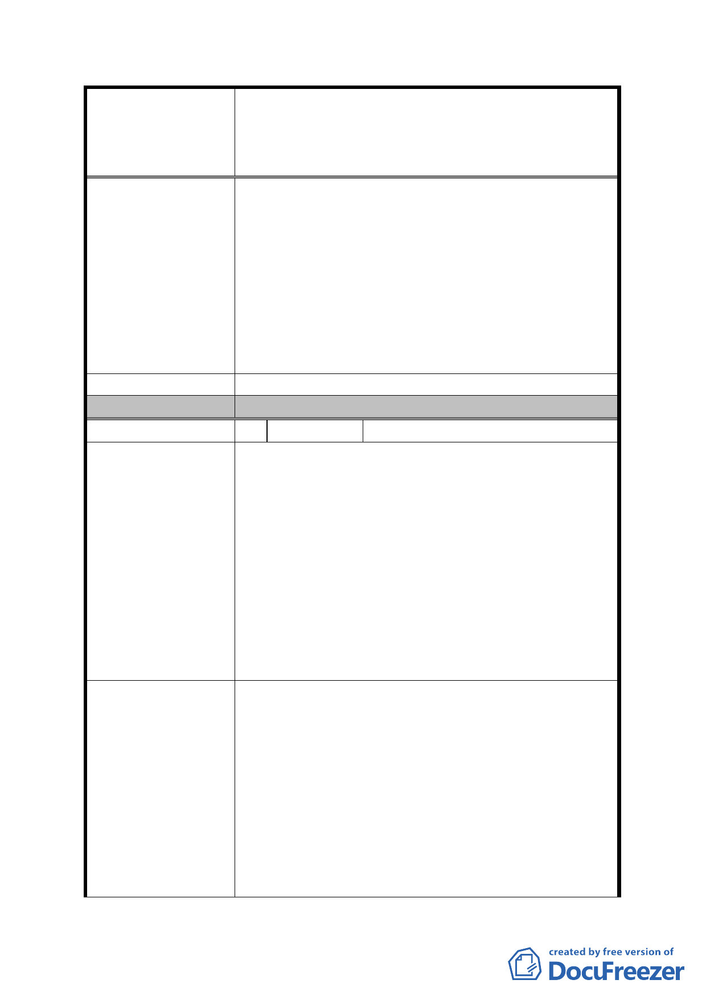

案名
發展局回應意見
委員會決議
編號
陳情理由
建議辦法
擬定臺北市內湖區蘆洲里附近工業區細部計畫暨變
更第 2 種工業區為科技工業區 B 區(特)、科技工業
區 B 區、道路用地、護坡用地及變更工業區(供輕工
業使用)為科技工業區 A 區(特)計畫案
們卻得付出 45%的土地參與規劃，市府應依公平
原則反饋我們合理的容積率，合理容積率計算如
下：200%(原容積率)÷0.55(配合重劃可拿回之土
地比例)＝363%(則得出重劃為住宅區後之合理
容積，即政府發還之土地容積不得低於 363%；
如低於此則違反重劃公平原則)。
3. 請政府正視我們的提案，尊重我們的居住權，讓
此區重劃後我們仍然可以在此安區立命，否則我
們將堅決反對此計畫。
同細計編號 2。
同編號 2 決議一至三。
8 陳情人
高文祥(正陽企業(股)公司)
1. 本公司長期與焚化爐為鄰，卻未享任何補償。今
要重劃，仍未接獲任何開會通知，將我公司視若
無物，實無法同意重劃。
2. 只因要重劃要徵收我公司 45%土地，令我公司拆
屋遷廠，卻無任何協商，實無法接受。
3. 我公司傾向與臨近地主合作，配合開發重劃，卻
無專案可循。
4. 重劃後之容積率雖與現況總量一致，卻無任何鼓
勵獎勵措施，重劃無意義。
5. 重劃後周遭區域行業別未篩選，不知重劃後之價
值為何？
1. 重劃區內地主應主動通知協商，而非只跟設籍於
此的民眾溝通。
2. 降低徵收百分比，提高建蔽率/容積率，獎勵大
地主整合配合開發重劃。
3. 提高拆遷補償金額，早日公佈細節時程。
4. 既為科技工業區，進駐之公司行業其營業別應有
所限制，非如細部計畫書附件一所列幾乎無限
制。
5. 應設立特別專案處理本區重劃，不能以一般都更
重劃案一樣，本區長期忍受垃圾山焚化爐汙染，
- 33 -